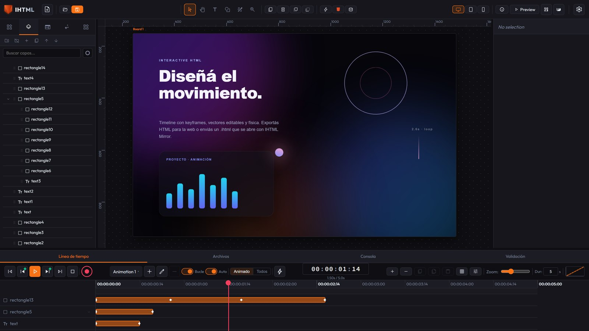
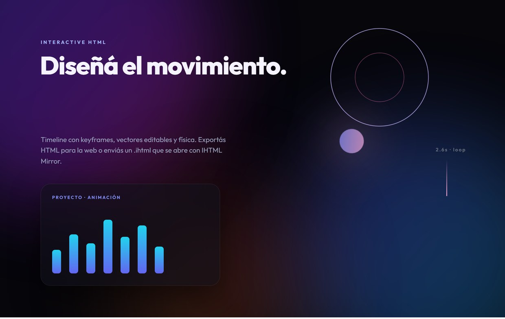

Veja como funciona
O editor por dentro
Canvas, timeline e inspetor em uma única janela. Sem painéis flutuantes para perseguir.


Editor visual de animações HTML/CSS: um canvas com artboards, timeline com keyframes, inspetor de propriedades e ações sem código. App para Windows, macOS, Linux e Android. Publique na web com Export HTML, ou envie um .ihtml — um documento interativo que abre com o IHTML Mirror e continua editável.

Baixar
App de desktop e Android. Instale uma vez e funciona offline.
No Android instala-se o IHTML Mirror (abre e roda um .ihtml); o editor completo é
somente desktop. iOS: em breve. Prefere rodar a partir do código-fonte? Veja "Como começar".
Recursos
Da timeline com keyframes à física real: animação web profissional, em uma única janela.
Várias animações nomeadas e independentes, auto-keyframe (REC), easing visual, marcadores de ação e copiar/colar pelo teclado.
Cenas dentro de um mesmo canvas, cada uma com seu tamanho e fundo; páginas navegáveis com transições ao exportar.
Design, Data, Actions e Física: layout, tipografia com busca de fontes web, degradês com linha livre sobre o canvas (aparece sozinha, um clique), seletor de cor mesclado no mesmo popover, estados hover/active, classes CSS e mais.
Clique, hover, tecla, scroll, delay… para mostrar/ocultar, animar, tocar timelines, definir variáveis, ir para páginas e mais.
Retângulos, elipses, polígonos e paths desenhados com a Pen: exportados como <svg>
real, com edição de nós, operações booleanas e morphing por keyframes.
Interface traduzível (EN, ES, PT, FR, DE, IT, JA, ZH) e seis temas, claros e escuros. São preferências do editor, nunca fazem parte do arquivo exportado.
O motor de animação posiciona com transform (compositor/GPU) em vez de
left/top — tanto no editor quanto no HTML exportado.
window.ihtmlDocument: controle as animações, variáveis e ações do resultado exportado a
partir do seu próprio script ou de um <iframe>.
Um servidor MCP de verdade: o Claude Code (ou outro cliente MCP) controla o editor já aberto diretamente — cria e edita elementos, muda breakpoints, ajusta o canvas e exporta, sem simular cliques.
Importa .ihtml (e .json antigos), HTML solto, SVG e designs do Sketch,
Penpot e EPUB. Exporta HTML único ou separado, imagem (PNG/WebP/JPEG), GIF e vídeo.
Mais de 50 tipos de elemento: textos, botões, inputs, cards, navbar, pricing, tabs, sliders, canvas, vídeo, iframes… com propriedades HTML reais por tipo.
Veja como funciona
Canvas, timeline e inspetor em uma única janela. Sem painéis flutuantes para perseguir.
O formato
Um .html para publicar na web, ou um .ihtml para enviar um documento interativo
que abre com o IHTML Mirror.
Um arquivo .html padrão (único ou separado em CSS+JS), com o motor de animação embutido.
Funciona em qualquer navegador e hospedagem, ou dentro de um <iframe>.
.ihtml → IHTML MirrorO arquivo que você envia: leva o projeto inteiro (elementos, animações, ações, fontes, imagens e vídeo). Quem recebe abre com o IHTML Mirror, o app gratuito — desktop ou Android.
.ihtml se reeditaEsse arquivo é ao mesmo tempo o resultado e a fonte: reabra no Editor e continue exatamente de onde parou. Sem projeto avulso para perder.
IHTML Mirror
O Mirror abre e roda um .ihtml. Pense nele como um PDF — mas com animação, interação e
controle de quem abre e até quando.

Propostas, catálogos, relatórios, onboarding — e publicidade interativa sem internet: leve num pendrive para uma feira, um estande ou uma loja e abre do mesmo jeito. Você envia um arquivo, não um link.
Material para pacientes, termos de consentimento informado e guias de procedimento: animados, claros
e no idioma que for preciso. O .ihtml não depende de um site que pode sair do ar.
Livros e apostilas interativas, exercícios e apresentações de aula. O aluno abre sem conta; com texto real e papéis ARIA, funcionam com leitores de tela e navegação por teclado.
Cada .ihtml é público, semiprivado ou privado (criptografado com
senha, AES-256). Com data de expiração opcional para material que não deveria circular para sempre.
O arquivo leva fontes, imagens e vídeo incorporados. Depois de ter o Mirror, ele abre offline: nem CDN, nem fontes que não carregam, nem links quebrados.
O IHTML Mirror não custa nada — como um leitor de PDF. Quem cria assina para exportar; o destinatário só instala o Mirror e abre.
Preços
O editor é gratuito. A assinatura habilita a exportação. Cancele quando quiser.
Grátis
US$0
.html e .ihtml.ihtmlCompleto
US$4 /mês
.ihtmlTambém US$36/ano (dois meses grátis). Até 2 dispositivos. Seus arquivos ficam sempre na sua máquina.
Primeiros passos
Baixe, instale e já está criando. Não precisa de conta nem de conexão.
.ihtml). Para a web, Export
HTML; para enviar um documento, um .ihtml que abre com IHTML
Mirror e pode ser editado de novo.
Prefere rodar a partir do código-fonte? Clone o repositório e:
npm install npm run dev
Abra a URL que o Vite imprime. Para empacotar o app de desktop: npm run tauri:build.
Documentação
Tudo o que o editor faz: interface, vetores, artboards, timeline, ações, física, exportação, atalhos de teclado e a API pública em tempo de execução.
Perguntas frequentes
O essencial do IHTML em quatro respostas curtas.
IHTML (Interactive HTML) é um editor visual de animações HTML/CSS: um canvas com artboards, timeline com keyframes, inspetor de propriedades e ações sem código. É um app de desktop para Windows, macOS e Linux, e um app para Android; também pode ser executado a partir do código-fonte no navegador.
Sim: o editor é gratuito e você pode exportar imagens (PNG, WebP e JPEG). A assinatura de US$4/mês — ou US$36/ano — habilita a importação e exportação de arquivos .html e .ihtml, além da exportação de GIF e vídeo; o plano Grátis não exporta HTML.
É o formato de documento do IHTML: leva o projeto inteiro embutido (elementos, animações, ações,
fontes, imagens e vídeo). Ele abre e roda com o IHTML Mirror, o app gratuito para desktop e
Android, e o mesmo arquivo reabre no Editor para continuar editando. Para publicar na web, usa-se o
Export HTML, que gera um arquivo .html padrão.
Sim: um arquivo .ihtml abre com o IHTML Mirror (gratuito, Windows/macOS/Linux/Android).
É como um leitor de PDF — quem recebe o arquivo instala o Mirror uma vez e pronto. Se preferir
que funcione em qualquer navegador sem instalar nada, exporte com Export HTML em vez de
.ihtml.
Não. Os projetos vivem na sua máquina e o editor funciona offline; não há contas nem backend. O HTML exportado funciona em qualquer hospedagem ou como arquivo único. O app inclui telemetria de diagnóstico opcional (erros e versão, nunca o conteúdo dos seus projetos) que pode ser desativada nas Configurações.